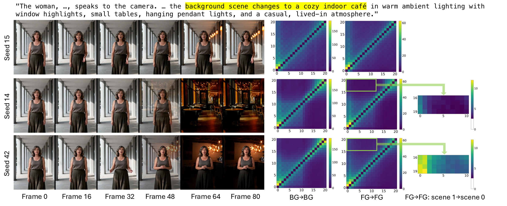
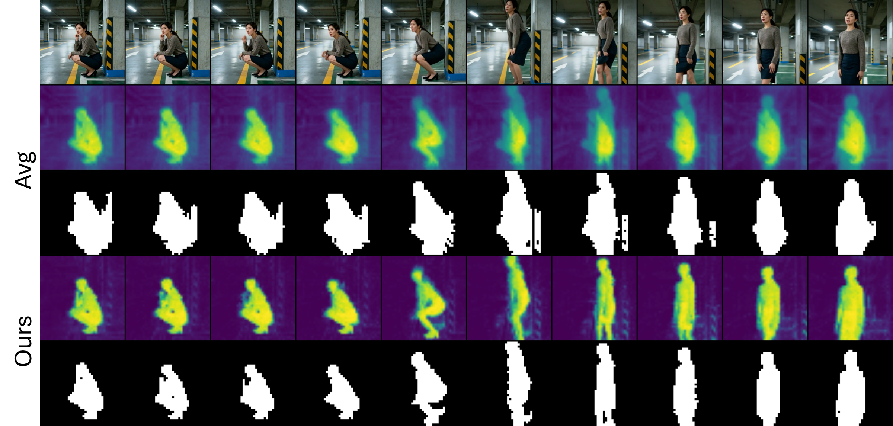
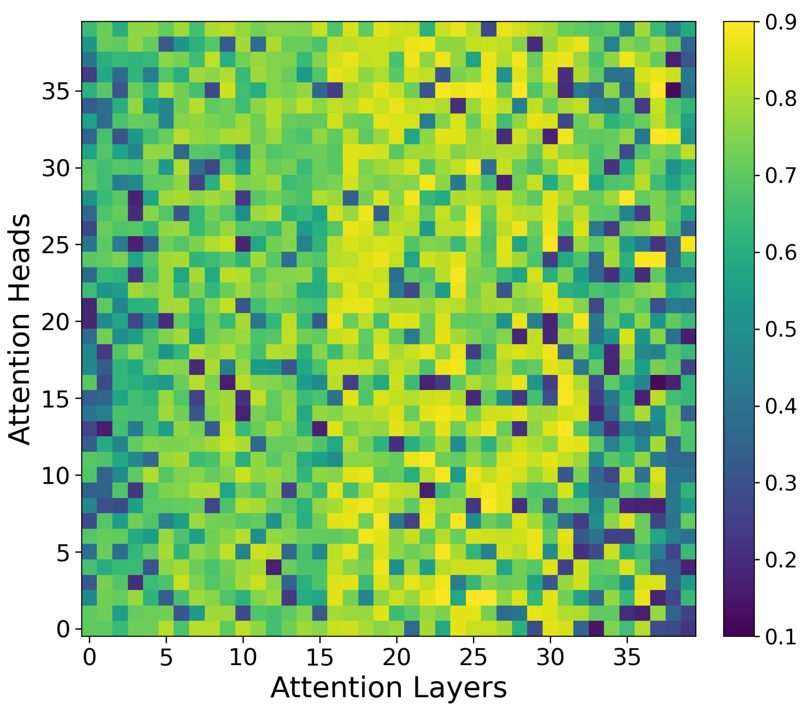
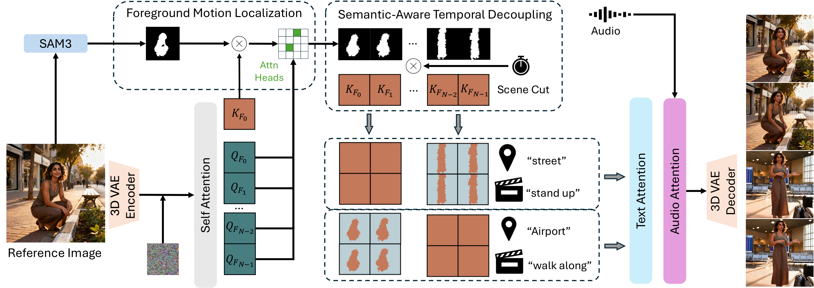

SceneShifter generates audio-driven human animation on MultiTalk with background changes at specified segments. The foreground subject keeps a consistent appearance and motion while each segment follows its own scene.
Although audio-driven human animation has achieved impressive realism, it still lacks effective Multi-Scene Temporal Control: orchestrating background transitions at precise timestamps while preserving a coherent foreground subject. We show that this challenge stems from the diffusion transformer's self-attention mechanism, and addressing it requires two capabilities: (1) Semantic-Aware Temporal Decoupling, which isolates background attention across scenes while retaining cross-scene foreground attention for subject consistency; and (2) Foreground Motion Localization, which accurately tracks the foreground subject across latent frames, especially under large motion. To address these challenges, we introduce SceneShifter, a training-free framework for precise multi-scene control in audio-driven human animation. SceneShifter guides spatio-temporal self-attention by suppressing cross-scene attention among background tokens while preserving cross-scene attention among foreground tokens. To support this guidance under large motion, SceneShifter extracts dynamic foreground masks from the self-attention layers and heads that best capture subject trajectories. We further introduce SceneShifterBench, a benchmark designed to evaluate scene-timing accuracy, foreground preservation, and visual quality under large motion and multiple subjects. Experiments show that SceneShifter achieves frame-level scene timing, strong subject preservation, and high visual quality, outperforming existing baselines.

With identical inputs, outcomes vary: Seed 15 keeps the walkway background; Seed 14 changes to the café but alters the subject; Seed 42 changes the background while preserving the subject. The attention maps reveal the pattern behind successful transitions: suppress cross-scene BG-to-BG attention while retaining FG-to-FG attention from the preceding scene. SceneShifter enforces this split explicitly.


Averaging attention across all heads can produce masks covering both the subject’s earlier and current positions. Since localization quality varies by head, SceneShifter averages selected heads with high FG/BG IoU to produce dynamic masks that follow the subject and reduce background leakage.

SceneShifter takes a reference image, speech audio, per-scene prompts, and user-specified cut times. Selected attention heads estimate dynamic foreground masks. At each cut, SceneShifter suppresses cross-scene background attention while preserving foreground attention across scenes, enabling background changes without disrupting subject continuity. Text cross-attention applies each scene's text prompt to the corresponding video segment. The speech audio conditions the animation across all scenes.
On Wan-Animate, a driving video controls the subject’s gestures. SceneShifter keeps the person visually consistent across the scheduled backgrounds while the body follows that driving motion.
On Wan2.1-Fun-Camera-Control, the same scene schedule runs together with a camera move. The examples below cover pan left, pan right, zoom out, clockwise, and anti-clockwise.